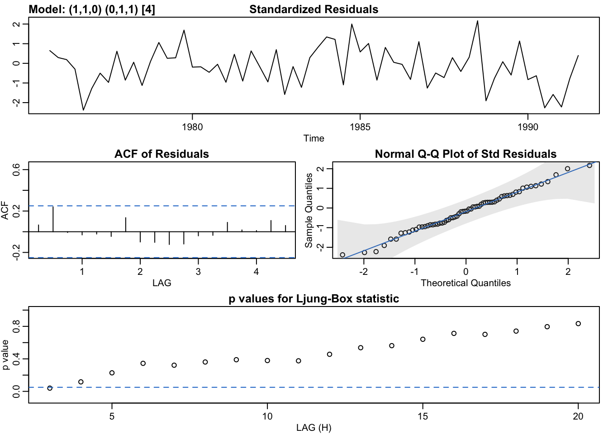

9 Min MSE Model Summary
## initial value -6.503379
## iter 2 value -6.623008
## iter 3 value -6.627969
## iter 4 value -6.648726
## iter 5 value -6.656746
## iter 6 value -6.659204
## iter 7 value -6.659887
## iter 8 value -6.660151
## iter 9 value -6.660155
## iter 9 value -6.660155
## iter 9 value -6.660155
## final value -6.660155
## converged
## initial value -6.649834
## iter 2 value -6.650443
## iter 2 value -6.650443
## iter 2 value -6.650443
## final value -6.650443
## converged
## $fit
##
## Call:
## stats::arima(x = xdata, order = c(p, d, q), seasonal = list(order = c(P, D,
## Q), period = S), include.mean = !no.constant, transform.pars = trans, fixed = fixed,
## optim.control = list(trace = trc, REPORT = 1, reltol = tol))
##
## Coefficients:
## ar1 sma1
## -0.2079 -0.6620
## s.e. 0.1291 0.1261
##
## sigma^2 estimated as 1.608e-06: log likelihood = 308.66, aic = -611.32
##
## $degrees_of_freedom
## [1] 57
##
## $ttable
## Estimate SE t.value p.value
## ar1 -0.2079 0.1291 -1.6111 0.1127
## sma1 -0.6620 0.1261 -5.2520 0.0000
##
## $AIC
## [1] -9.859961
##
## $AICc
## [1] -9.85668
##
## $BIC
## [1] -9.759435